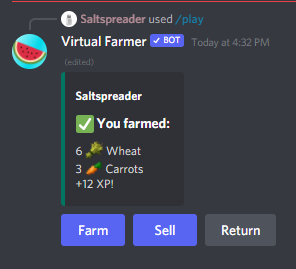
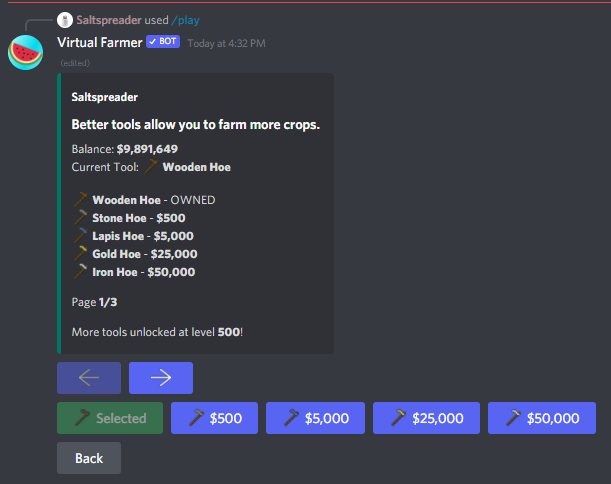
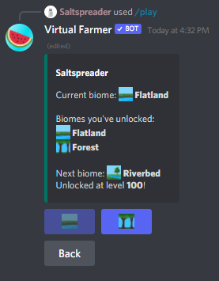

Home
Basic Guide
Donate
Official Server
Invite
Virtual Farmer
Liven up your Discord server
Add to server
Join Support Server
Farm
Virtual Farmer is focused on farming, there are countless plants, tools, and upgrades for you to discover.
Your progress in the bot stays with you across servers, allowing you to farm wherever you'd like and still show off to your friends in another server.


Unlock new upgrades
As you play, you will always be unlocking new upgrades to improve how effectively you can farm.
For the most devoted players, there is even a prestige system in place where you can reset your progress for various permanent boosts.
Level up and compete
As you play, you level up and unlock new content; including biomes, upgrades, tools, plants, and more.
The bot features a variety of leaderboards, allowing you to compete with your friends, or even globally.
